Profil Karakter Utama
Desa Smurf Utama
Papa Smurf
Pemimpin bijaksana (desa smurf cowok) dan penyihir utama desa Smurf.
Sering memberikan nasihat dan solusi atas masalah yang dihadapi para Smurf.
Smurfette / Smurfin (Cewek)
Smurf perempuan pertama yang awalnya diciptakan oleh Gargamel namun kemudian menjadi bagian dari komunitas Smurf.
Cerdas, pemberani, dan sering menjadi penengah dalam konflik.
Hefty Smurf / Smurf Kekar
Smurf terkuat dan paling atletis.
Sering berperan sebagai pelindung desa.
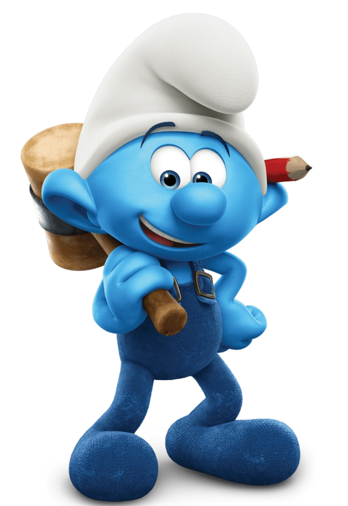
Handy Smurf / Smurf Terampil
Smurf yang ahli dalam menciptakan alat dan memperbaiki berbagai hal.
Sering membantu dalam pembangunan dan perbaikan di desa.
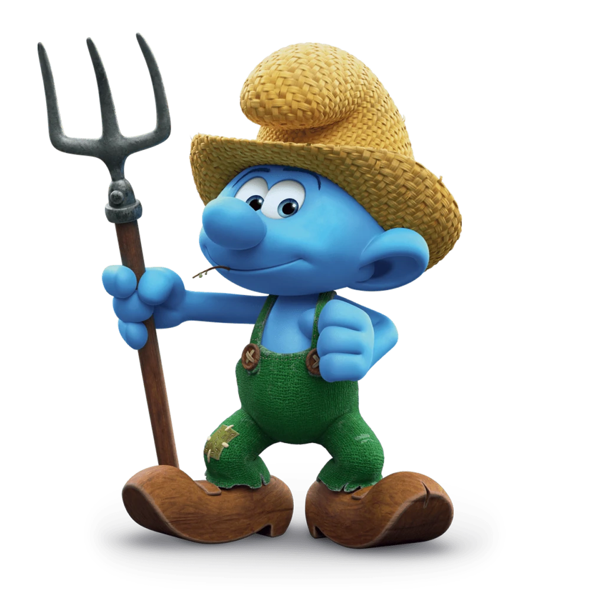
Farmer Smurf / Smurf Petani
Smurf yang bertanggung jawab atas pertanian dan kebun di desa.
Menjamin ketersediaan makanan bagi komunitas.
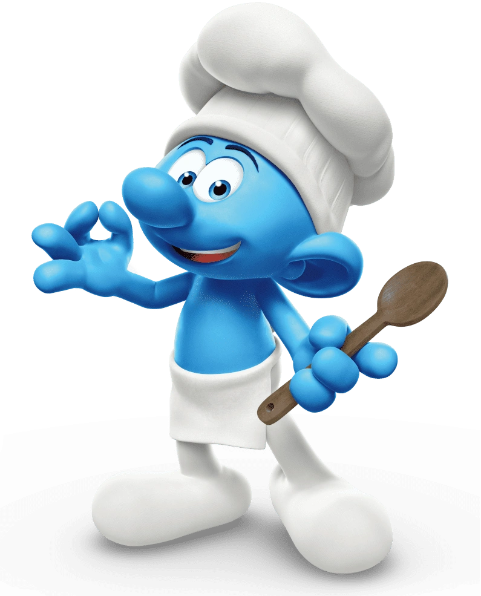
Chef Smurf / Smurf Koki
Smurf yang ahli memasak dan sering menyiapkan hidangan lezat untuk Smurf lain.
Mengelola dapur utama di desa.
Greedy Smurf / Smurf Gembul
Smurf yang sangat menyukai makanan, terutama kue dan permen.
Sering terlihat makan atau mencari camilan.
Grouchy Smurf / Smurf Gerutu
Smurf yang selalu tampak kesal dan pesimis.
Meskipun demikian, ia peduli terhadap teman-temannya.
Doctor Smurf / Smurf Dokter
Smurf yang bertindak sebagai dokter desa.
Memberikan perawatan dan pengobatan kepada Smurf yang sakit, termasuk Peri Daun saat sakit di season 2.
Brainy Smurf / Smurf Kacamata
Smurf yang merasa paling pintar dan sering memberikan ceramah kepada Smurf lain..
Meskipun niatnya baik, seringkali membuat Smurf lain kesal.
Harmony Smurf / Smurf Musik
Smurf yang gemar bermain musik, terutama terompet dan sering memakai kacamata hitam.
Sayangnya, suara terompetnya sering tidak enak didengar.
Poet Smurf / Smurf Penyair
Smurf yang gemar menulis puisi dan karya sastra.
Sering membacakan puisinya kepada Smurf lain.
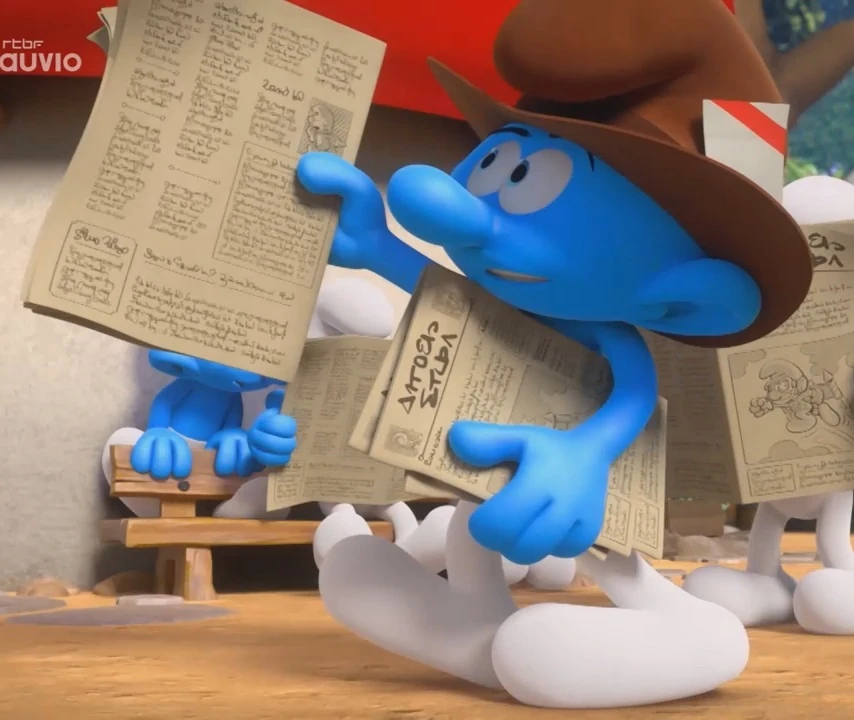
Reporter Smurf / Smurf Reporter Berita
Smurf yang mendokumentasikan kejadian di desa.
Sering membuat berita dan laporan untuk komunitas.
Clumsy Smurf / Smurf Ceroboh
Smurf yang ceroboh namun berhati emas..
Seringkali membuat Smurf lain kesal.
Niat baik Smurf Ceroboh dan Smurf Naif menjadi pemadam kebakaran justru sering memicu kekacauan lucu karena sifat ceroboh dan kepolosan mereka.
Dimwitty Smurf / Smurf Naif
Smurf yang agak lamban dalam berpikir namun baik hati.
Sering menimbulkan situasi lucu karena kebodohannya.
Niat baik Smurf Ceroboh dan Smurf Naif menjadi pemadam kebakaran justru sering memicu kekacauan lucu karena sifat ceroboh dan kepolosan mereka.
Lazy Smurf / Smurf Pemalas
Smurf yang paling suka tidur dan bersantai.
Jarang terlibat dalam kegiatan desa kecuali jika sangat diperlukan.
Jokey Smurf / Smurf Badut
Smurf yang gemar membuat lelucon dan memberikan hadiah kejutan yang meledak.
Menjadi sumber hiburan sekaligus kekesalan bagi Smurf lain.
Tailor Smurf / Smurf Penjahit
Smurf yang membuat dan memperbaiki pakaian untuk komunitas.
Menjaga agar semua Smurf tampil rapi dan bersih.
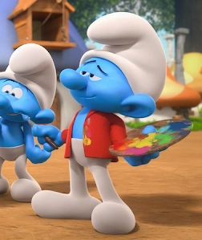
Painter Smurf / Smurf Pelukis
Smurf yang berbakat dalam seni lukis.
Sering melukis pemandangan desa dan potret teman-temannya.
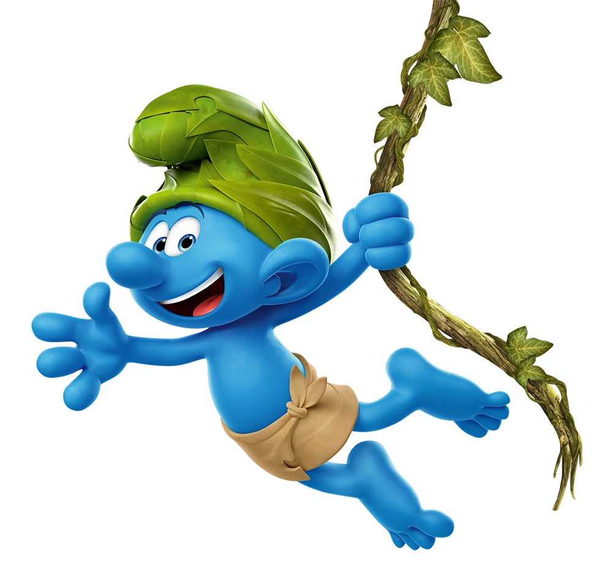
Wild Smurf / Smurf Liar
Smurf yang tinggal di hutan dan memiliki hubungan erat dengan alam dan hewan.
Baby Smurf / Bayi Smurf
Smurf bayi yang lucu dan menggemaskan.
Menjadi pusat perhatian dan kasih sayang Smurf lainnya
Karakter Lainnya
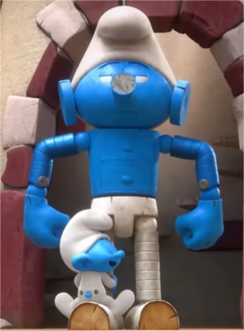
Diaper Daddy / Papa Popok (Robot Smurf)
Robot Smurf yang bertindak sebagai pengasuh bagi Bayi Smurf, asisten pribadi Smurf Terampil dan diciptakan oleh Smurf Terampil.
Sering terlihat membawa Bayi Smurf di punggungnya.
Penuh kasih sayang dan perhatian terhadap Baby Smurf.
Diperkenalkan di Season 1
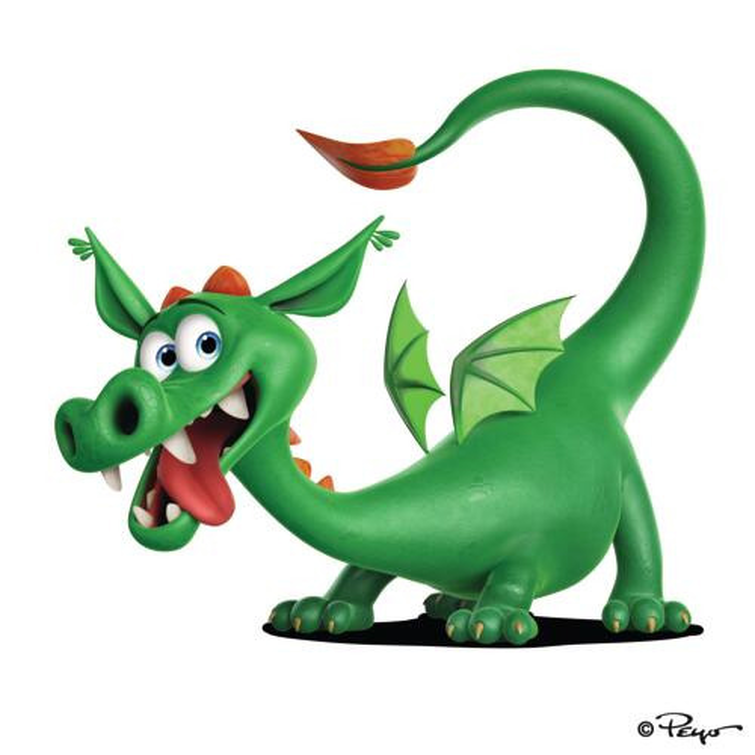
Voltaire (Naga elemen Es)
Naga jantan muda yang tinggal di gua dan pertama kali muncul pada Season 3 (episode "Dragon Pet").
Bisa berjalan dengan dua kaki dan memiliki napas es super dingin yang mampu membekukan siapa pun.
Ditakuti mayoritas Smurf karena suara gonggongan dan kekuatannya, namun dianggap sangat manis oleh Smurf perempuan bernama Lily.
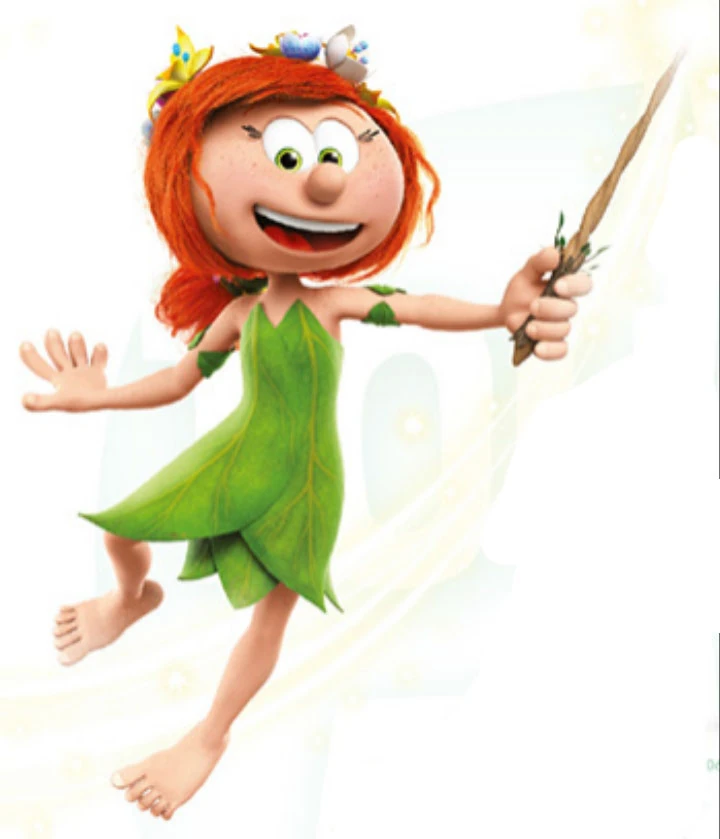
Leaf (Peri Daun atau Daun)
Peri muda pengganti Ibu Alam.
Masih belajar mengendalikan kekuatan alam.
Penuh semangat, ceria, dan sangat berani.
Penuh rasa ingin tahu, menawan, dan peduli pada hutan.
Diperkenalkan pada Season 2.
Desa Smurf Perempuan
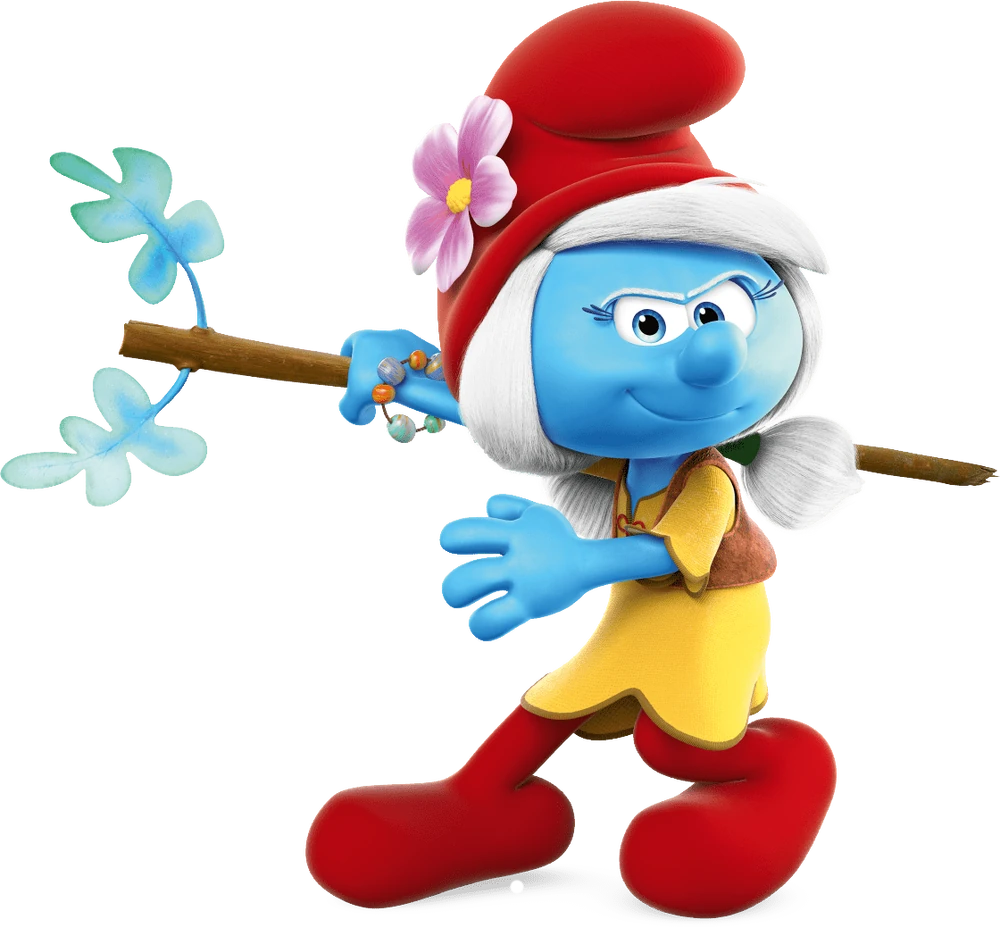
SmurfWillow / Ramping (Cewek)
Pemimpin Smurf perempuan dari Smurfy Grove.
Kedudukannya hampir seperti Papa Smurf yang disebut alkemis, Willow juga bisa disebut sebagai dukun.
Bijaksana dan menjadi panutan bagi Smurf perempuan lainnya.
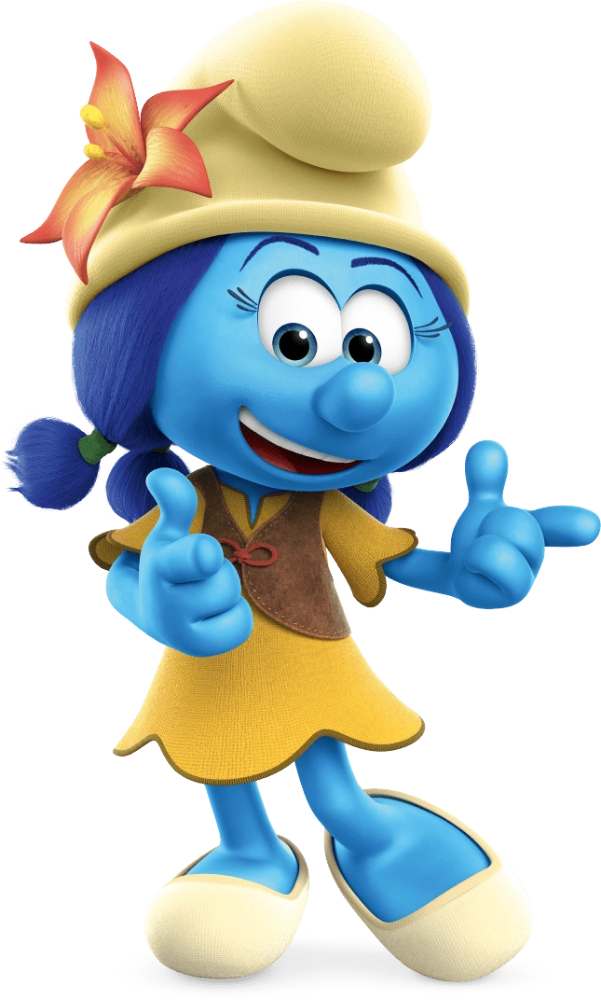
SmurfLily / Lily (Cewek)
Smurf perempuan yang lembut dan penuh kasih dan suara lembut.
cerdas dan rasional tidak pernah bertindak sebelum memikirkannya dengan matang.
Menjadi teman dekat Smurfette.
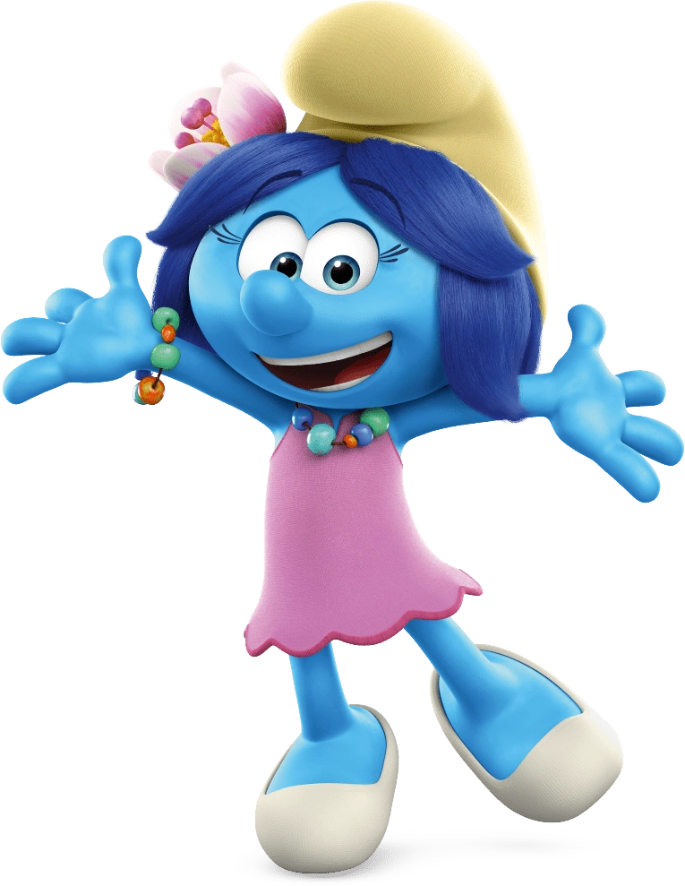
SmurfBlossom / Mekar (Cewek)
Smurf perempuan yang ceria dan penuh semangat.
Membawa keceriaan ke dalam komunitas.
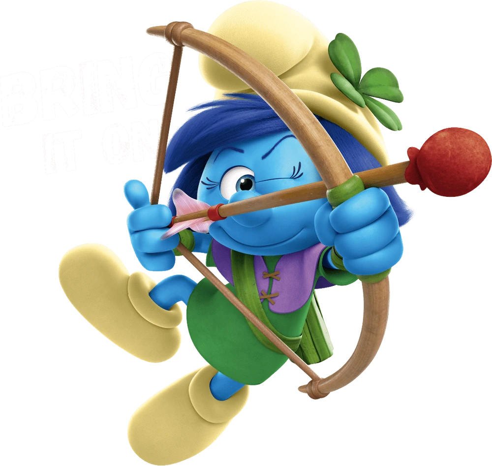
SmurfStorm / Badai (Cewek)
Smurf perempuan yang pemberani dan tangguh.
Ahli pemanah dan petarung yang ulung
Sering mengambil peran dalam misi berbahaya.
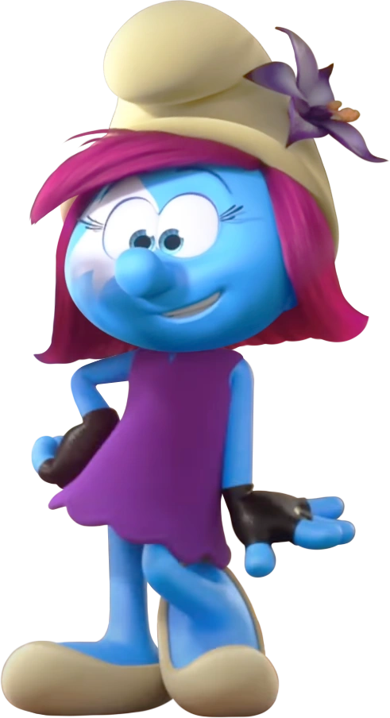
SmurfMeteorite / Meteorite (Cewek)
Pemain drum dalam grup musik bersama Rocky, Glammy dan Smurf Musik.
Berpenampilan punk dengan rambut magenta, mengenakan sarung tangan tanpa jari, dan memiliki tato api putih di dekat mata kanan.
Berani, ekspresif, dan sedikit nakal; sering terlibat dalam lelucon bersama Smurf lain.
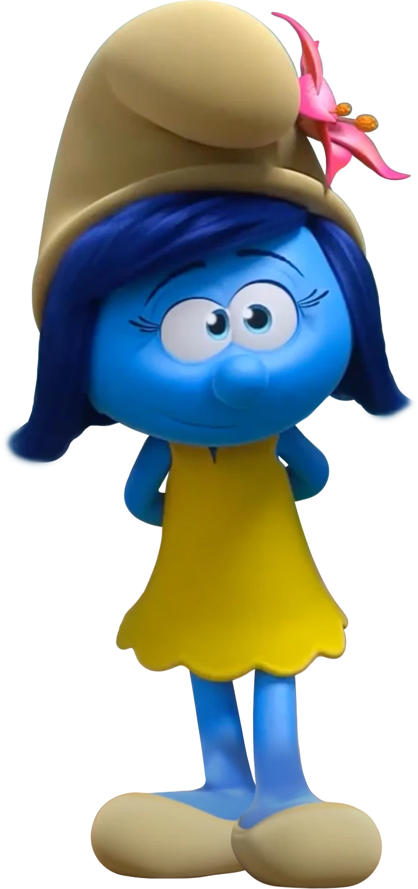
SmurfBegonia / Begonia (Cewek)
Salah satu Smurf perempuan dari Smurfy Grove.
Berambut seperti Badai, mengenakan gaun kuning dan bunga lili merah muda di topinya.
Ceria namun mudah teralihkan perhatian; mencintai hewan dan benda-benda berkilau.
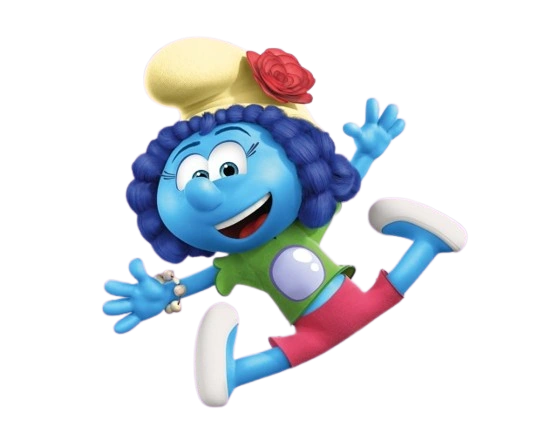
SmurfBubble / Smurf Gelembung (Cewek)
Salah satu Smurf perempuan dari Smurfy Grove.
Memiliki kemampuan teleportasi dengan gelembung.
Penuh semangat dan suka berpetualang; sering bersama sahabatnya, Kunang-kunang.
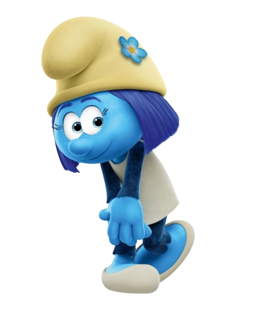
SmurfFirefly / Kunang-kunang (Cewek)
Salah satu Smurf perempuan dari Smurfy Grove.
Memiliki kemampuan untuk bersinar dalam gelap.
Pemalu namun berani saat dibutuhkan; bersahabat dekat dengan Gelembung.
Manusia Raksasa Gendut (Ogre)
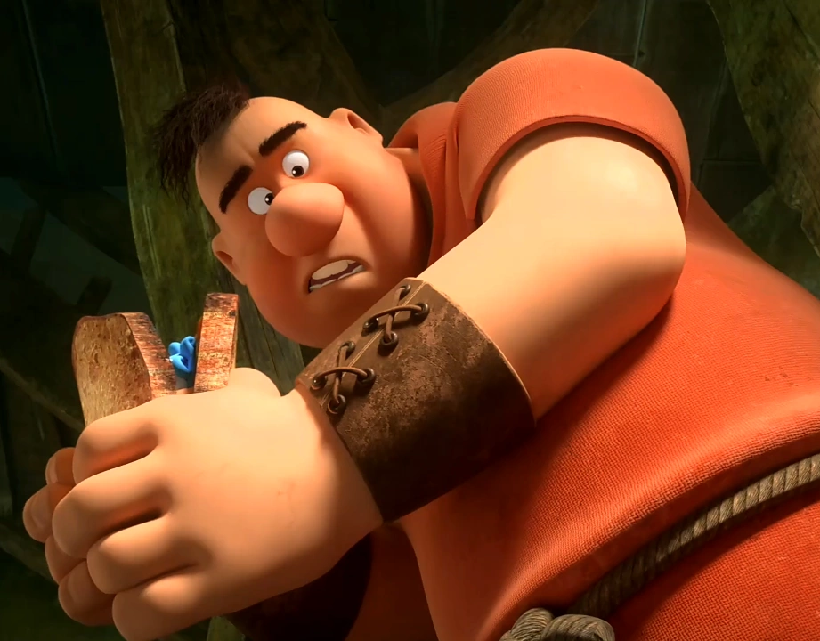
Bigmouth (Ogre) / Mulut Besar
Sifat: Besar, kuat, sangat rakus, dan bodoh.
Makanan Favorit: Segala hal, termasuk batu berselimut lendir.
Menjadi ancaman desa karena suka memburu Smurf untuk dimakan.
Jatuh cinta pada Smurfette di episode "Ogre Love" (Musim 2) setelah jempolnya diobati.
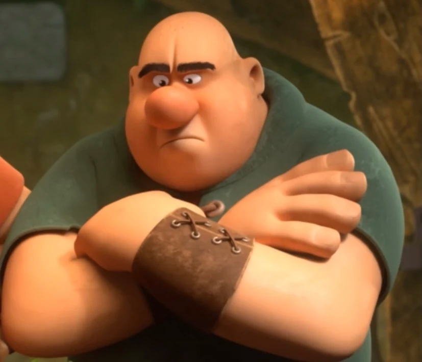
Egghead (Ogre) / Kepala Telur
Sifat: Kuat, pemarah, rakus, dan sangat tidak sabaran.
Membuat kekacauan saat memaksa Chef Smurf memasak makanan untuknya dengan cepat.
Antagonis
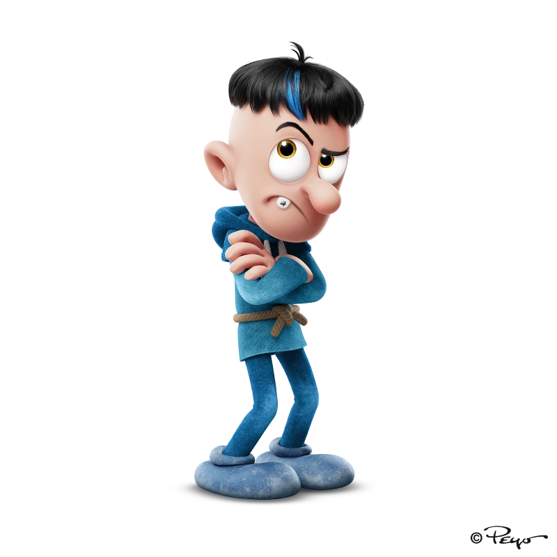
Dwayne
Keponakan Gargamel.
Anak laki-laki pra-remaja yang sering mencoba menangkap Smurf bersama adik perempuannya, Rowena.
Nakal dan suka membuat masalah.
Diperkenalkan pada Season 3.
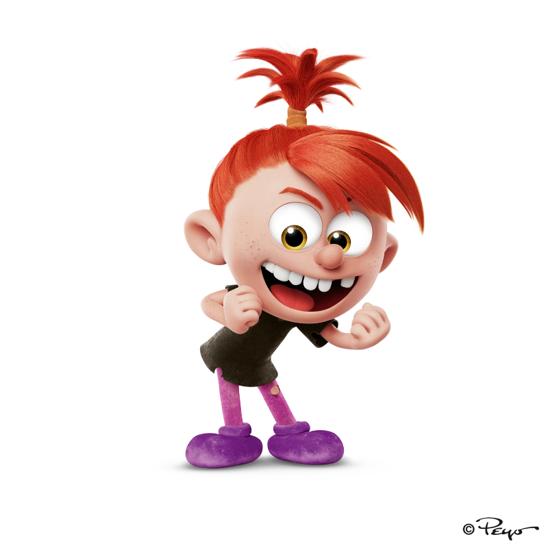
Rowena
Keponakan Gargamel .
Anak perempuan pra-remaja yang sering mencoba menangkap Smurf bersama kakak laki-lakinya, Dwayne.
Cerdik dan manipulatif; sering memanfaatkan situasi untuk keuntungannya sendiri.
Diperkenalkan pada Season 3.
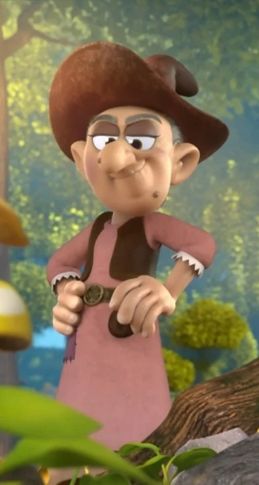
Mommy Gargamel / Ibu nya Gargamel
Ibu nya Gargamel, .
Seorang wanita tua yang galak dan suka memerintah.
Sering mengkritik Gargamel atas obsesinya mengejar Smurf.
Tidak menyukai kucing dan selalu mengusir Azrael saat berkunjung.
Meskipun sering memarahi dan merendahkan Gargamel, Mummy tetap peduli padanya.
Gargamel
Penyihir jahat yang selalu ingin menangkap Smurfs.
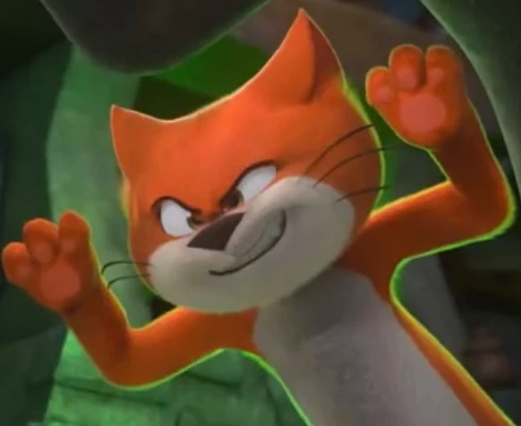
Azrael
Kucing Gargamel yang membantu mencari Smurfs.
Daftar Episode
Season 1 (2021 - 2022)
- 1. Who Nose? / Hidung siapa?
- 2. Diaper Daddy / Papa Popok
- 3. Smurf-Fu
- 4. Who's Heftier? / Siapa yang Lebih Kuat?
- 5. Where's Papa Smurf? / Di Mana Papa Smurf?
- 6. Mind the Cat / Hati-hati dengan Kucingnya
- 7. DRIIINNGGGGG! / KRINGGGGG
- 8. The Scariest Smurf / Smurf yang Paling Menakutkan
- 9. Clumsy Not Clumsy / Canggung Tapi Tidak Canggung
- 10. Unsmurfable Smile / Senyum yang Tak Terlupakan
- 11. Smurf Your Seat Belts! / Pasang Sabuk Pengamanmu! (Daunkan saja)
- 12. Joke's on You / Lelucon untukmu
- 13. Smurfs In Disguise / Smurf yang Menyamar
- 14. Alien Smurf / Smurf Alien
- 15. My Smurf The Hero / Smurfku Sang Pahlawan
- 16. Leaf It Alone / Biarkan Saja
- 17. The Makeover / Perubahan Penampilan
- 18. Bringing Up Smurfy / Membesarkan Anak
- 19. Kitchen Klutz / Ceroboh di Dapur
- 20. The Majestic 5 / Lima Serangkai
- 21. Chef Soup / Sup Koki
- 22. The Round Up / Pengumpulan
- 23. Adventures in Smurfsitting / Petualangan Mengasuh Smurf Bayi
- 24. The Pluffs! (Part 1) / Para Pluff! (Bagian 1)
- 25. The Pluffs! (Part 2) / Para Pluff! (Bagian 2)
- 26. Waffle Wednesday / Rabu Waffle
- 27. Lab Assistant / Asisten Laboratorium
- 28. Smurfy Day Care / Penitipan Bayi Smurf
- 29. Funny Mommy / Ibu yang Lucu
- 30. Smurfy Secrets (Part 1) / Rahasia Smurf (Bagian 1)
- 31. Smurfy Secrets (Part 2) / Rahasia Smurf (Bagian 2)
- 32. Fake News / Berita Palsu
- 33. Crashing Gargamel's Party / Mengacaukan Pesta Gargamel
- 34. Storm Loses Her Mojo / Storm Kehilangan Mojonya
- 35. Smurfboards / Papan Smurf
- 36. The Curse of the Smurfs' Treasure / Kutukan Harta Karun Smurf
- 37. Pop Out! / Muncul!
- 38. Forget Me What? / Lupakan Aku ?
- 39. Cover Story / Cerita Utama
- 40. Knight Smurfalot / Ksatria Smurfalot
- 41. Flying Ace / Penerbang Ulung
- 42. The Smurfs Show (Part 1) / Pertunjukan Smurf (Bagian 1)
- 43. The Smurfs Show (Part 2) / Pertunjukan Smurf (Bagian 2)
- 44. Monkey See, Monkey Do / Monyet Melihat, Monyet Meniru
- 45. Order of Merit / Urutan Prestasi
- 46. Mirror, Mirror on the Armoire / Cermin, Cermin di Lemari
- 47. Smurfing Places / Tempat-tempat Smurf
- 48. Leaping Lizards / Kadal Melompat
- 49. Smurfy Mother's Day! / Hari Ibu Smurf!
- 50. Papa Times Two / Papa Dua Kali Lipat
- 51. You're Fired! / Kamu Dipecat
- 52. Poet Slam / Lomba Puisi
Season 2 (2022 - 2023)
- 1. Where's My Smurfway? / Di Mana Smurfway ku?
- 2. A Thief Among Us! / Ada Pencuri di Antara Kita!
- 3. Manners Matter / Tata Krama Itu Penting
- 4. The Guest Who Wouldn't Leave / Tamu yang Tidak Mau Pergi
- 5. The Talented Justa Smurf / Justa Smurf yang Berbakat
- 6. Mommy's Masterpiece / Mahakarya Ibu
- 7. Smurf, Yes Smurf! / Smurf, Ya Smurf!
- 8. Say Smurf for the Camera! / Katakan Smurf ke Kamera!
- 9. Ogre Love (Part 1) / Cinta Ogre (Bagian 1)
- 10. Ogre Love (Part 2) / Cinta Ogre (Bagian 2)
- 11. Back To Nature / Kembali ke Alam
- 12. Shell Game / Permainan Cangkang
- 13. Doctor Brainy & Mister Dumb / Tuan Pintar dan Tuan Naif
- 14. Blossom Goes Wild! / Blossom jadi liar
- 15. Smurfette Overdoes It! / Smurfette Berlebihan!
- 16. Okey-Dokey!
- 17. Curing Private Timid / Menyembuhkan Smurf Pemalu
- 18. Souffle Shuffle
- 19. Smurfy Magic Duel / Duel Sihir yang paling Smurfy
- 20. No Smurf Out! / Tidak Ada Smurf yang Keluar!
- 21. Papa Smurf Leaves the Nest / Papa Smurf Meninggalkan Sarang
- 22. The Stolen Portrait / Potret yang Dicuri
- 23. Lost Cat / Kucing yang Hilang
- 24. Baby Sensei / Bayi Sensei
- 25. The Magic Pumpkin / Labu Ajaib
- 26. The Star Smurf / Smurf Bintang
- 27. Brainy Gets Ghosted! / Brainy Ditinggalkan Hantu!
- 28. The Snail Whisperer / Pembisik Siput
- 29. Never Wake a Sleeping Sorcerer! / Jangan Pernah Membangunkan Penyihir yang Tidur!
- 30. Smurf Racers / Pembalap Smurf
- 31. Waffles and Punishment / Wafel dan Hukuman
- 32. Smurf To the Future! (Part 1) / Smurf Menuju Masa Depan! (Bagian 1)
- 33. Smurf To the Future! (Part 2) / Smurf Menuju Masa Depan! (Bagian 2)
- 34. Who's in the Band? / Siapa yang Ada di Band?
- 35. Gargamel Goes Gaga / Gargamel jadi gila
- 36. The Cuddly Toy / Mainan yang Menggemaskan
- 37. Relaxosmurf
- 38. Wanna Bet? / Mau taruhan?
- 39. Wild Gets Tamed / Liar yang Dijinakkan
- 40. Dreamer: Master of Love / Pemimpi: Penguasa Cinta
- 41. The Sarsaparillo Run / Lari Sarsaparillo
- 42. I'm Off To the Circus! / Aku Pergi ke Sirkus!
- 43. The Yummyus Pie / Pai Yummyus
- 44. Smurfs Might Fly / Smurf Mungkin Bisa Terbang
- 45. Smurfs on Fire / Smurf Terbakar
- 46. Happy Smurfs Fools Day! / Selamat Hari April Mop Smurf!
- 47. The Wrench Smurf / Smurf Kunci Pas
- 48. Leaf's Under the Weather / Daun Sedang Sakit
- 49. An Unsmurfy Friendship / Persahabatan yang Tidak Smurf
- 50. A Smurfy Christmas / Natal yang Smurf
- 51. House Call / Kunjungan Rumah
- 52. Gargamel, Queen of the Prom / Gargamel, Ratu Pesta Dansa
Season 3 (2024 - 2025)
- 1. Family Time / Waktu Keluarga
- 2. Smurf VS Machine / Smurf VS Mesin
- 3. See Gargamel Run / Lihat Gargamel lari
- 4. Hefty Baby / Bayi Smurf Kekar
- 5. Dragon Pet / Hewan Peliharaan Naga
- 6. The Ultimate Prank / Lelucon Pamungkas
- 7. Rowena's Plant / Tanaman Rowena
- 8. What A Doll / Boneka yang bagus
- 9. The Great Smurfs Games (Part 1) / Permainan Smurf Hebat (Bagian 1)
- 10. The Great Smurfs Games (Part 2) / Permainan Smurf Hebat (Bagian 2)
- 11. I Want A Dragon / Aku Ingin Naga
- 12. Magic Meltdown / Kekacauan Sihir
- 13. His Own Worst Enemy / Musuh Terburuknya Sendiri
- 14. Tree of Knowledge / Pohon Pengetahuan
- 15. Reaching For Stars / Meraih Bintang
- 16. The Dream Team / Tim Impian
- 17. The Battle of the Sitters / Pertempuran Para Pengasuh
- 18. Lucretia Seizes Power / Lucretia Merebut Kekuasaan
- 19. Monster in the Village / Monster di Desa
- 20. The Tour / Tur
- 21. The Prettiest Pebble in the World / Kerikil Terindah di Dunia
- 22. Let's Smurf to Mars / Ayo Smurf ke Mars
- 23. The Thirteenth Dessert / Hidangan Penutup Ketigabelas
- 24. Smurfing a Masterpiece / Mensmurf Sebuah Mahakarya
- 25. Wobbly Tooth / Gigi Goyang
- 26. Slithering Smurfs / Smurf yang Merayap
- 27. The Darkest Night / Malam Tergelap
- 28. Drummer Girl / Gadis Penabuh Drum
- 29. Granny's Doll / Boneka Nenek
- 30. What the Bear Said / Apa Kata Beruang
- 31. Dwayne's New Toy / Mainan Baru Dwayne
- 32. Waffle Thief / Pencuri Wafel
- 33. Smurfily Grumrfy
- 34. Disco Smurf
- 35. Smurfalicious Cat Food / Makanan Kucing yang lezat
- 36. Parallel Worlds / Dunia Paralel
- 37. Farmer's New Pet / Hewan Peliharaan Baru Petani
- 38. Fire Brigade on Foot / Pemadam Kebakaran Berjalan Kaki
- 39. Big Baby / Bayi Besar
- 40. Don't Smurf a Sound / Jangan Bersuara Smurf
- 41. We Smurfed on the Moon (Part 1) / Kami Smurf di Bulan (Bagian 1)
- 42. We Smurfed on the Moon (Part 2) / Kami Smurf di Bulan (Bagian 2)
- 43. Gargamel's Doggy / Anjing Gargamel
- 44. Scary Stories / Cerita Menakutkan
- 45. The Smurf Who Lost His Shadow / Smurf yang Kehilangan Bayangannya
- 46. Storm and the Lost Talisman (Part 1) / Badai dan Jimat yang Hilang (Bagian 1)
- 47. Storm and the Lost Talisman (Part 2) / Badai dan Jimat yang Hilang (Bagian 2)
- 48. Spider Smurf / Smurf Laba-laba
- 49. Papa Smurf Lost His Mind / Papa Smurf Kehilangan Akal Sehatnya
- 50. Smurf T for Thief / Smurf T untuk Pencuri
- 51. Papa's Birthday Gift / Hadiah Ulang Tahun Papa
- 52. Bee My Friend / Lebah Temanku